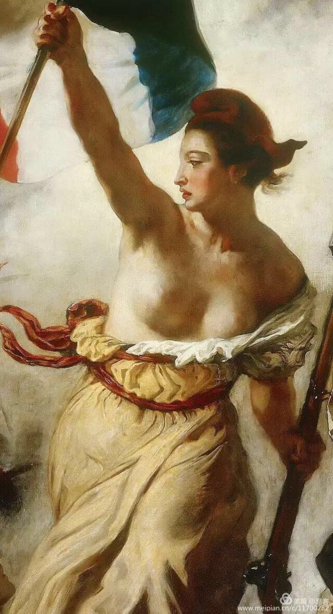
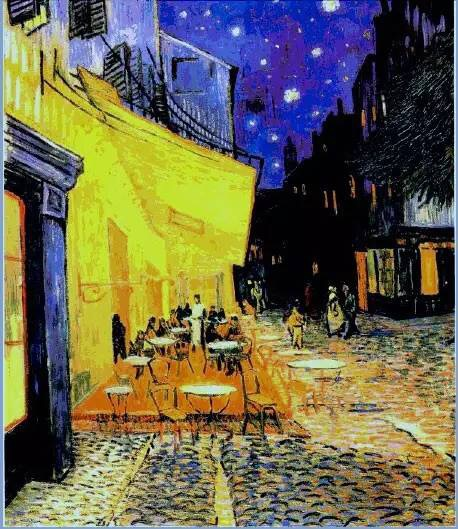
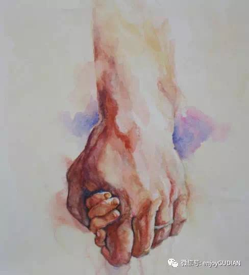

- 鲁迅
- 李琦
- 国风
- 湖畔烟树
- 湖畔烟树
— 致敬女神
- 湖畔烟树
- 湖畔烟树

- 湖畔烟树
— 秋分的慢板
- 湖畔烟树
— 献给我的父亲我的母亲
- 乔颖
| 六月的朗诵 | ||
| 1 | 雪 - 鲁迅 |
|
| 2 | 变老的时候 - 李琦 |
|
| 3 | 岁月 - 国风 |
|
| 4 | 缘来你才是最美的星座 - 湖畔烟树 |
|
| 5 | 蝴蝶胸针 - 湖畔烟树 |
|
| 6 | 吾之欲望，吾之砒霜 — 致敬女神 - 湖畔烟树 |
 |
| 7 | 阿尔的向日葵 - 湖畔烟树 |
|
| 8 | 阿尔的星空 - 湖畔烟树 |
 |
| 9 | 鱼、马、星辰与向日葵 — 秋分的慢板 - 湖畔烟树 |
|
| 10 | 厨艺•读书•有趣的人 — 献给我的父亲我的母亲 - 乔颖 |
 |